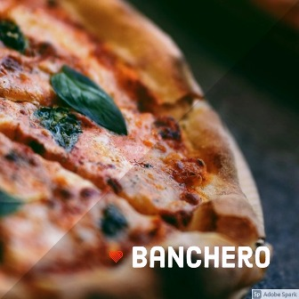
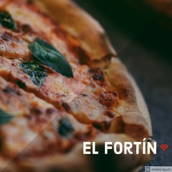

Banchero
Av. AlmiranteBrown 1200- En la Boca, la Av. AlmiranteBrown ("Bron" según el decir delos vecinos), luce orgullosamentelas mejores pizzerías del barrio, ysinlugar a dudas, Banchero es lamás tradicional.Agustín Banchero llegó a la Bocadel Riachuelo en 1893,procedente de su Génova natal.Instaló una pequeña panaderíaen la calle Olavarría en la quetrabajó con su hijo Juan. Allí nacióla fugazza con queso;rápidamente se convirtió enverdadero patrimoniogastronómico de La Boca,recorrió y triunfó en todo elmundo.
El Cedrón
Av. Juan B.Alberdi 6101- Hoy El Cedrón es la más famosapizzería del tradicional barriode Mataderos, concurrida por unnumeroso público "local" (comoel reconocido historiador OfelioVecchio) y otro que llega acomprobar el prestigio que hatrascendido los límites barriales.Su esquina es conocida comoesquina Breccia, debido a laplaca allí ubicada en 1994 quehomenajea al dibujante AlbertoBreccia.

El Fortín
Av. AlvarezJonte 5299- Hoy El Fortín es una famosapizzería del barrio de MonteCastro en su límite con Villa Luro,con una clientela tan consecuenteque podría ser comparada conuna hinchada. Fundada en 1947por los señores Amigo yFernández, obviamente "hinchas"de Vélez, es uno de los buscadosreductos con horno a leña. Mide 3metros de diámetro, concapacidad para 25 moldesgrandes. Se calienta usandoquebracho y le dan luz conmadera de álamo y sauce.
El Chiste
Moreno 467- En el histórico barrio deMontserrat, en el local deMoreno 467, entre Bolívar yDefensa, donde funciona desde1989 la pizzería El Chiste, en unamanzana muy rica desde el puntode vista patrimonial siconsideramos que en ellaconviven: la elegante farmacia LaEstrella, el Museo de la Ciudad, lacasa en que vivió durante suinfancia y juventud la recordadaactriz Niní Marshall, la Librería deAvila (ex Librería del Colegio) y elCafé Notable La Puerto Rico.

Las Cuartetas
Av. Corrientes838- La pizzería del catalán Espinach ydel vasco Urcola abrió suspuertas en el local de Corrientes yLibertad, allí suele asegurarseque donAlberto Vaccarezza escribíacuartetas espontáneas en lasparedes,de ahí que los parroquianoscomenzaron a llamarla "La casade lascuartetas". A raíz de ello susdueños la bautizaron oficialmenteLasCuartetas.